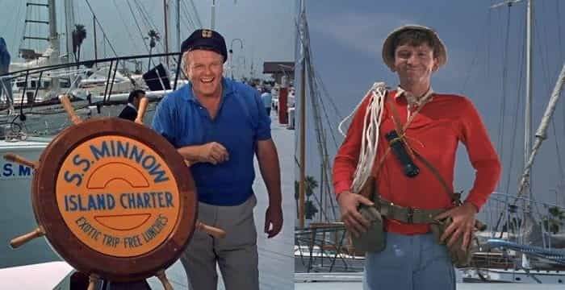
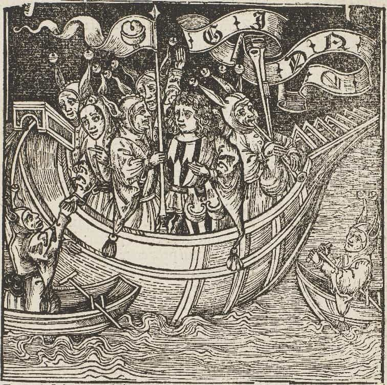

Naval history is a fascinating epic of bravery, endurance, and adventure. The Phoenicians plied the sometimes tempestuous Mediterranean, and even beyond the “Gates of Hercules”. The Greeks were famed mariners likewise; The Iliad immortalized the names of the triremes crossing the wine-dark sea. Galleys helped maintain the vast Roman Empire. Later, European men began exploring the world. My Viking ancestors set forth in longboats, braving storms and bitter cold. Then Columbus discovered America: thousands of years after the Indians, five centuries after the Norse, but five centuries before Jack Kerouac. His voyage into the great unknown ignited the Renaissance.
Navigation was critical, driving great technological advancement. Viking methods were crude: for instance, sail northwest from the Orkneys until a particular star gets four fingers closer to the horizon, then due west to reach Iceland. When men sailed in caravels, things were further advanced; sextants took precise measurements, cross-referenced to tables. Clocks became ever more accurate to determine longitude. Charles Babbage developed the first stirrings of computer technology, intending to print precise navigation tables without math mistakes or copying errors that might leave sailors lost at sea.
Today, GPS is the big thing. However, despite today’s advanced maritime technology, two strong and independent American ladies recently got in quite a pickle.
The Skipper and the First Mate set sail on a fateful trip

Not these two, but yanno…
Last April, Jennifer Appel and Tasha Fuiava and their two dogs left Hawaii in the Sea Nymph. Their destination was 2700 miles south-by-east: Tahiti, long prized by tourists seeking tranquility or a romantic getaway. Appel did have experience sailing around Hawaii, but Fuaiva was new at it.
They expected to arrive in three or four weeks. Soon things began going horribly awry, leading to a nearly six month odyssey. So much for the three week tour…
The weather started getting rough
As the Daily Mail reports:
After leaving ‘we got into a Force 11 storm, and it lasted for two nights and three days,’ Appel said of the storm they encountered off Oahu. In one of the first signs of trouble, she said she lost her cellphone overboard.
‘We were empowered to know that we could withstand the forces of nature,’ Appel said. ‘The boat could withstand the forces of nature.’
But the National Weather Service in Honolulu said no organized storm systems were in or near Hawaii on May 3 or in the days afterward. Archived NASA satellite images confirm there were no tropical storms around Hawaii that day.
If that indeed was a cell phone (rather than a satellite phone), then it wouldn’t have worked anyway. (Pro tip: the ocean doesn’t have cell towers.) They considered turning back to the nearest tropic port, but incorrectly figured that Maui and Lanai wouldn’t have docks suitable for their 50 foot boat. They pressed onward, faster than a speeding hamster.
The tiny ship was tossed

Then they had a problem with the sail rigging, but unfortunately empowerment didn’t alleviate this. Traditionally, sailors climb the mast using a strap and fix the ropes. Perhaps the ladies didn’t have a strap suitable for this purpose.
They came upon a small island, but…
‘It is uninhabited. They only have habitation on the northwest corner and their reef was too shallow for us to cross in order to get into the lagoon,’ Appel said.
But Christmas Island, part of the island nation of Kiribati, is home to more than 2,000 people and has a port that routinely welcomes huge commercial ships.
If they’d gone to nearby Tabuaeran (Fanning Atoll, population ~2000), Napari (Tereitaki village) on the northwest has an ocean-facing dock. Tenenebo Village also has a dock just inside the lagoon. Or they could’ve set anchor nearby and found a helpful soul to un-goof the rigging.
If not for the courage of the fearless crew
After bypassing these uncharted desert isles, they decided to head to the Cook Islands. From Kiribati, it’s about 300 miles further away than Tahiti. For alternate destinations, American Samoa is about as close as Tahiti. The mate, a mighty sailing woman, proceeded onward with the skipper, brave and sure.
Then, they say, another storm killed their engine at the end of May.
The Coast Guard made radio contact with a vessel that identified itself as the Sea Nymph in June near Tahiti, and the captain said they were not in distress and expected to make land the next morning.
Bummer! As those with diesel-oriented inclinations usually know, the fix is to eject the water from the cylinders by removing the glow plugs and turning the engine. Adrift in the hot and sultry tropics, the Sea Nymph floated aimlessly for five months.
Don’t Bogart the chips, Ginger
Their year’s worth of provisions were dwindling. Quite fortunately, they had stocked up, heeding the advice of experienced mariners. Thus, they didn’t have to barbecue their pets, dive for clams, or whatever.
They had floated to within 900 miles of Japan, roughly opposite their original trajectory and twice as far; not exactly where they intended to go. A passing Taiwanese fishing boat noticed them and summoned the Navy. The USS Ashland brought the pair and their pets to Okinawa. However, the Sea Nymph was not towed back with them; it was determined likely to sink within a day. Poseidon had mercy at last.
Many questions have arisen. Why not use the radio as soon as the engine went out, when apparently they were quite near Tahiti? How about their flares? They had an emergency distress beacon too, but…
She claimed that in her experience the beacon should only be used when you are in imminent physical danger and going to die in the next 24 hours.
‘Our hull was solid, we were floating, we had food, we had water, and we had limited maneuverable capacity,’ Appel said in an interview in Japan, where the U.S. Navy took them after their rescue. ‘All those things did not say we are going to die. All that said it’s going to take us a whole lot longer to get where we’re going.’
Other accounts of the incident state that they feared sharks would breach their hull. In any event:
Appel and Fuiava also said they had six forms of communication that all failed to work.
I really hate it when that happens.
Conclusion
It’s not just a job; it’s an adventure.
Here’s why the crabby feminists who think men aren’t good for anything are wrong. We specialize in designing, building, and fixing things. Technology apparently is part of “toxic masculinity”. We invented today’s conveniences that make life comfortable, which often are taken for granted (until something breaks). We’re quite resourceful too. Solving problems—rather than talking about them—gives us personal satisfaction. Also, we help others out just because, even if they got themselves into the pickle.
After being rescued by the Navy, these two plucky ladies were sincerely grateful; quite touching these days. Feminists should start cultivating gratitude too, rather then resentment. They also should quit infecting normal women with their hostile attitudes. Male helpfulness is frequently exploited, sometimes to our detriment. However, continued ingratitude is making our patience wear thin.
They plan a redo of the trip next May. First they intend to build an “unsinkable and unbreakable boat”. If they succeed, this unprecedented technological advance would make them a fortune. At the very least, hopefully lessons learned will empower these strong and independent women to have a more successful three week tour.
Read More: This Accidental Experiment Shows The Superiority Of Patriarchy